import pandas as pd # data manipulation and analysis
import geopandas as gpd # spatial data operations
import numpy as np # multi-dimensional arrays and matrices
import matplotlib.pyplot as plt # static visualizations
import seaborn as sns # attractive statistical graphics, including KDEs
import contextily as cx # adding basemaps
# sklearn - clustering (unsupervised learning) and nearest-neighbour search
from sklearn.cluster import DBSCAN
from sklearn.neighbors import NearestNeighbors
# ESDA: Exploratory Spatial Data Analysis
from esda.adbscan import ADBSCAN, get_cluster_boundaryLab in Python
Points
Think about the last time you walked through a city. Some things around you — lamp posts, bus stops, benches — sit exactly where they were put, and stay there. Others — where a crime happened, where someone hailed a taxi, where a photo was taken — could have happened almost anywhere, but happened to happen right there. Points, it turns out, can be read in two completely different ways.
NoteTwo ways to think about a point
Fixed objects — the location is just a given fact (a bus stop is where it is). Analysing these is a lot like analysing polygons or lines: the geometry describes something that already exists.
Events — the location is the interesting part. The thing could theoretically have happened anywhere, but it manifested here rather than there. This is the lens we’ll use for the rest of this notebook.
When we zoom out from a single event to a whole collection of them, we get a point pattern — and the arrangement of those points becomes the object of study in its own right.
🔎 Think of crime in a city. In principle, a crime could happen on almost any street corner. In practice, they cluster — some blocks see them constantly, others almost never. That clustering (or lack of it) is exactly what point pattern analysis is built to describe.
Point patterns come in two flavours:
- Unmarked — all you have is where. Just the coordinates of each crime, nothing else.
- Marked — you also know what. The type of crime, the damage caused, the time of day — extra attributes riding along with each location.
TipThe questions driving this notebook
- What’s the shape of the distribution — clustered, dispersed, random?
- Is there structure we can actually detect statistically, or does it just look like a pattern to the human eye?
- Why here and not there? What process could be generating what we see?
This notebook is a gentle, hands-on introduction to working with point patterns in Python — reading them in, transforming them, and building up a toolkit of ways to visualize what they’re telling you.
Importing Modules
Data
We are going to continue with Airbnb data in a different part of the world.
Airbnb Buenos Aires
Let’s read in the point dataset:
# read the Airbnb listing
listings = pd.read_csv("data/BuenosAires/listings_nooutliers.csv")
listings.describe()| id | host_id | neighbourhood_group | latitude | longitude | price | minimum_nights | number_of_reviews | |
|---|---|---|---|---|---|---|---|---|
| count | 1.857200e+04 | 1.857200e+04 | 0.0 | 18572.000000 | 18572.000000 | 18572.000000 | 18572.000000 | 18572.000000 |
| mean | 2.867385e+07 | 1.086210e+08 | NaN | -34.592447 | -58.415045 | 5423.835667 | 6.996016 | 15.924779 |
| std | 1.418299e+07 | 1.075071e+08 | NaN | 0.017905 | 0.029366 | 28865.078495 | 20.730803 | 33.354753 |
| min | 6.283000e+03 | 2.616000e+03 | NaN | -34.689621 | -58.530930 | 218.000000 | 1.000000 | 0.000000 |
| 25% | 1.846015e+07 | 1.383494e+07 | NaN | -34.602909 | -58.434413 | 1800.000000 | 2.000000 | 0.000000 |
| 50% | 3.175833e+07 | 6.603382e+07 | NaN | -34.591709 | -58.414255 | 2790.000000 | 3.000000 | 3.000000 |
| 75% | 4.000713e+07 | 1.889644e+08 | NaN | -34.582119 | -58.391129 | 4470.500000 | 5.000000 | 16.000000 |
| max | 5.110064e+07 | 4.125068e+08 | NaN | -34.533298 | -58.355412 | 962109.000000 | 730.000000 | 500.000000 |
Let’s finish preparing it, note the CRS:
# locate the longitude and latitude
listings.columnsIndex(['id', 'name', 'host_id', 'host_name', 'neighbourhood_group',
'neighbourhood', 'latitude', 'longitude', 'room_type', 'price',
'minimum_nights', 'number_of_reviews', 'last_review'],
dtype='object')# use columns 'longitude' and 'latitude' to create points, and set the crs
listings_gdf = gpd.GeoDataFrame(
listings,
geometry=gpd.points_from_xy(listings.longitude, listings.latitude),
crs="EPSG:4326"
)Adminstrative Areas
We will later use administrative areas for aggregation. Let’s load them.
BA = gpd.read_file("data/BuenosAires/neighbourhoods_BA.shp") # read shp
BA["geometry"] = BA.geometry.make_valid() # make geometry validSpatial Join
# spatial overlay between points and polygons
listings_BA = listings_gdf.sjoin(BA, how="inner", predicate="intersects")
# read the first lines of the attribute table
listings_BA.head()| id | name | host_id | host_name | neighbourhood_group | neighbourhood | latitude | longitude | room_type | price | minimum_nights | number_of_reviews | last_review | geometry | index_right | neighbourh | neighbou_1 | |
|---|---|---|---|---|---|---|---|---|---|---|---|---|---|---|---|---|---|
| 0 | 6283 | Casa Al Sur | 13310 | Pamela | NaN | Balvanera | -34.605228 | -58.410419 | Entire home/apt | 4810 | 3 | 1 | 2011-01-31 | POINT (-58.41042 -34.60523) | 30 | Balvanera | None |
| 1 | 11508 | Amazing Luxurious Apt-Palermo Soho | 42762 | Candela | NaN | Palermo | -34.581841 | -58.424149 | Entire home/apt | 6254 | 2 | 27 | 2021-04-03 | POINT (-58.42415 -34.58184) | 2 | Palermo | None |
| 2 | 12463 | Room in Recoleta - awesome location | 48799 | Matt | NaN | Recoleta | -34.597771 | -58.396641 | Private room | 2597 | 1 | 20 | 2016-02-12 | POINT (-58.39664 -34.59777) | 6 | Recoleta | None |
| 3 | 13095 | Standard Room at Palermo Viejo B&B w pvt Bath | 50994 | Ariel | NaN | Palermo | -34.593479 | -58.429489 | Private room | 2722 | 1 | 1 | 2018-12-18 | POINT (-58.42949 -34.59348) | 2 | Palermo | None |
| 4 | 13096 | Standard Room in Palermo Viejo B&B | 50994 | Ariel | NaN | Palermo | -34.593479 | -58.429489 | Private room | 2722 | 1 | 0 | NaN | POINT (-58.42949 -34.59348) | 2 | Palermo | None |
how="inner"ensures that only matching records (where the spatial relationship is true) are included.predicate="intersects"specifies that the join condition is based on whether the geometries intersect.
One-to-one
The first approach we review here is the one-to-one approach, where we place a dot on the screen for every point to visualise. We are going to plot the points by neighbourhood.
fig, ax = plt.subplots(figsize=(8, 8))
listings_gdf.plot(column="neighbourhood", ax=ax, markersize=2, legend=False)
ax.set_axis_off()
plt.show()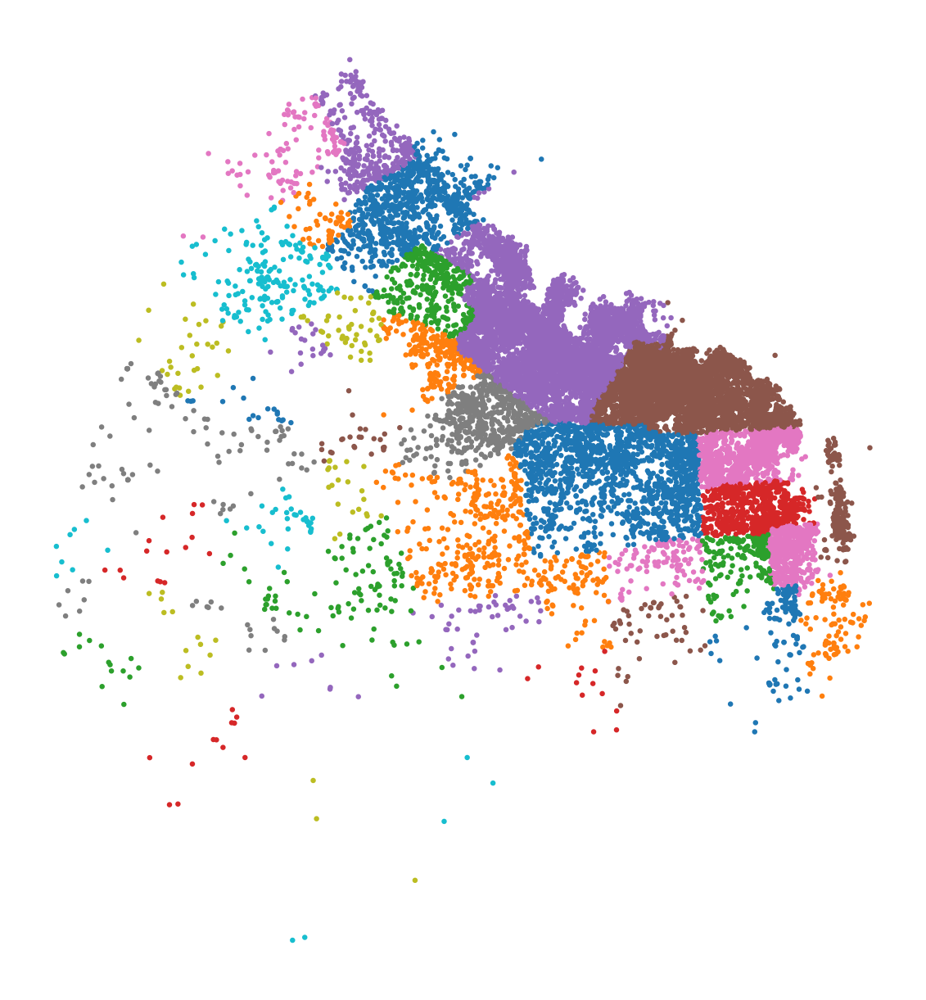
We can visualise a bit better with a basemap
Important
CARTO retired free, unauthenticated access to their tiles (CartoDB.Positron, .Voyager, .DarkMatter) — using them without your own CARTO API key now returns a tile stamped “API KEY REQUIRED”. Esri.WorldGrayCanvas and Esri.WorldStreetMap stay free and key-free, so we use those throughout.
Note that contextily expects Web Mercator (EPSG:3857) to line tiles up with your data, so we reproject first:
# reproject to Web Mercator for the basemap
listings_gdf_3857 = listings_gdf.to_crs(epsg=3857)
fig, ax = plt.subplots(figsize=(8, 8))
listings_gdf_3857.plot(column="neighbourhood", ax=ax, markersize=2, alpha=0.5, legend=False)
cx.add_basemap(ax, crs=listings_gdf_3857.crs, source=cx.providers.Esri.WorldGrayCanvas)
ax.set_axis_off()
plt.show()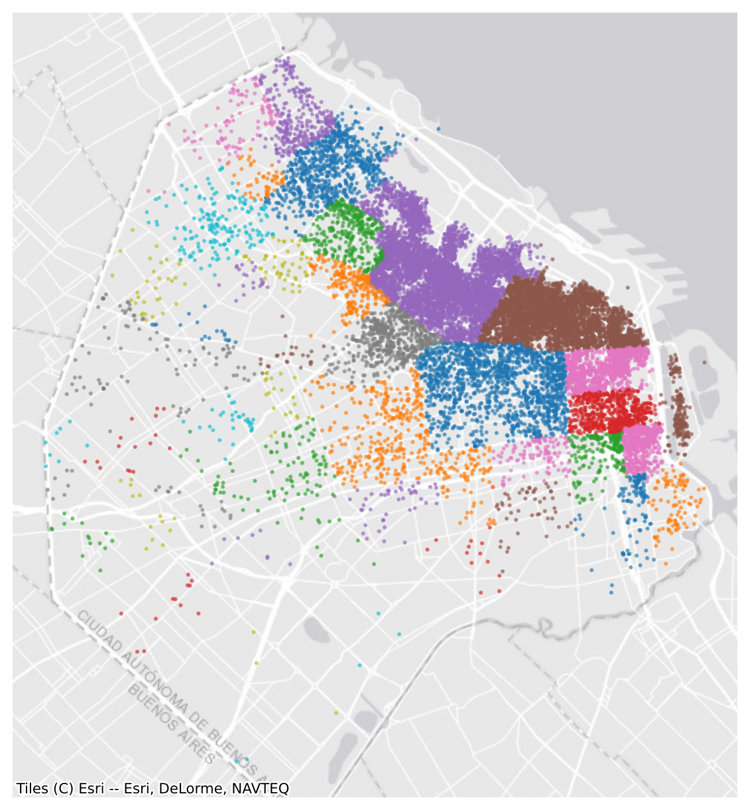
Points meet polygons
The approach presented above works until a certain number of points to plot; tweaking dot transparency and size only gets us so far and, at some point, we need to shift the focus. Having learned about visualizing lattice (polygon) data, an option is to “turn” points into polygons and apply techniques like choropleth mapping to visualize their spatial distribution. To do that, we will overlay a polygon layer on top of the point pattern, join the points to the polygons by assigning to each point the polygon where they fall into, and create a choropleth of the counts by polygon.
This approach is intuitive but of course raises the following question: what polygons do we use to aggregate the points? Ideally, we want a boundary delineation that matches as closely as possible the point generating process and partitions the space into areas with a similar internal intensity of points. However, that is usually not the case, no less because one of the main reasons we typically want to visualize the point pattern is to learn about such generating process, so we would typically not know a priori whether a set of polygons match it. If we cannot count on the ideal set of polygons to begin with, we can adopt two more realistic approaches: using a set of pre-existing irregular areas or create a artificial set of regular polygons. Let’s explore both.
Irregular lattices
To exemplify this approach, we will use the administrative areas we have loaded above. Let’s add them to the figure above to get better context:
fig, ax = plt.subplots(figsize=(8, 8))
BA.plot(ax=ax, facecolor="none", edgecolor="black", linewidth=0.5)
listings_gdf.plot(column="neighbourhood", ax=ax, markersize=2, alpha=0.5, legend=False)
ax.set_axis_off()
plt.show()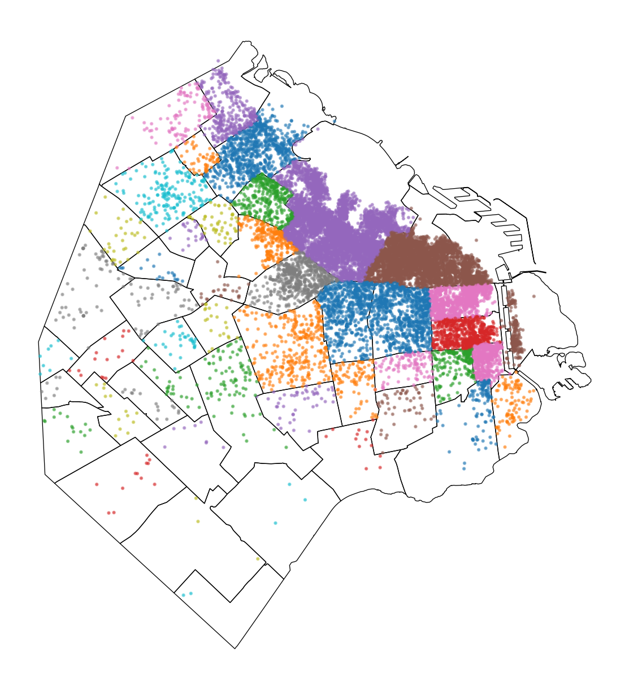
Now we need to know how many airbnb each area contains. Our airbnb table already contains the neighbourhood ID following our use of the spatial join. Now, all we need to do is counting by area and attaching the count to the areas table. We can also calculate the mean price of each area.
We rely here on the groupby method which takes all the airbnbs in the table and groups them by neighbourhood. Once grouped, we count how many elements each group has, and calculate the mean price. We then merge the result back onto the polygons so we have geometry to map.
# aggregate at neighbourhood level
listings_BA_agg = listings_BA.groupby("neighbourh").agg(
count_airbnb=("price", "size"), # create count
mean_price=("price", "mean") # average price
).reset_index()
# merge the aggregated data back with the polygons to retain geometry
airbnb_neigh_agg = BA[["neighbourh", "geometry"]].drop_duplicates().merge(
listings_BA_agg, on="neighbourh"
)
airbnb_neigh_agg.head()| neighbourh | geometry | count_airbnb | mean_price | |
|---|---|---|---|---|
| 0 | Chacarita | POLYGON ((-58.45282 -34.59599, -58.45366 -34.5... | 263 | 5551.224335 |
| 1 | Villa Crespo | POLYGON ((-58.42376 -34.59783, -58.42496 -34.5... | 609 | 2878.351396 |
| 2 | Palermo | POLYGON ((-58.42676 -34.55202, -58.42676 -34.5... | 5793 | 5629.723459 |
| 3 | Parque Chas | POLYGON ((-58.47082 -34.58745, -58.47082 -34.5... | 21 | 2968.666667 |
| 4 | Villa Del Parque | POLYGON ((-58.49461 -34.61487, -58.49479 -34.6... | 37 | 3097.729730 |
The lines above have created a new column in our table called count_airbnb that contains the number of airbnb that have been taken within each of the polygons in the table. mean_price shows the mean price per neighbourhood.
At this point, we are ready to map the counts. Technically speaking, this is a choropleth just as we have seen many times before:
fig, ax = plt.subplots(figsize=(8, 8))
airbnb_neigh_agg.plot(
column="count_airbnb", ax=ax, edgecolor="white",
cmap="viridis_r", legend=True, legend_kwds={"label": "Count", "shrink": 0.5}
)
# add neighbourhood labels at polygon centroids
for _, row in airbnb_neigh_agg.iterrows():
centroid = row["geometry"].centroid
ax.text(centroid.x, centroid.y, row["neighbourh"], fontsize=5, ha="center")
ax.set_title("Count of Airbnbs by Neighbourhood")
ax.set_axis_off()
plt.show()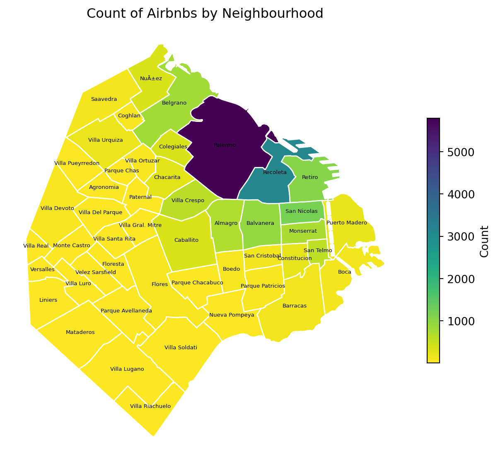
The map above clearly shows a concentration of airbnb in the neighbourhoods of Palermo and Recoleta. However, it is important to remember that the map is showing raw counts. In the case of airbnbs, as with many other phenomena, it is crucial to keep in mind the “container geography” (MAUP). In this case, different administrative areas have different sizes. Everything else equal, a larger polygon may contain more listings, simply because it covers a larger space. To obtain a more accurate picture of the intensity of listings by area, what we would like to see is a map of the density of listings, not of raw counts. To do this, we can divide the count per polygon by the area of the polygon.
Let’s first calculate the area of each administrative delineation. Note we reproject to EPSG:22176 (a projected CRS for Argentina, in metres) first — you cannot meaningfully compute area from unprojected lon/lat:
# reproject to a CRS in metres before computing area
airbnb_neigh_agg = airbnb_neigh_agg.to_crs(epsg=22176)
# calculate area in square kilometres (1e6 just means 1000000)
airbnb_neigh_agg["area_km2"] = airbnb_neigh_agg.geometry.area / 1e6
# calculate density
airbnb_neigh_agg["density"] = airbnb_neigh_agg["count_airbnb"] / airbnb_neigh_agg["area_km2"]With the density at hand, creating the new choropleth is similar as above:
fig, ax = plt.subplots(figsize=(8, 8))
airbnb_neigh_agg.plot(
column="density", ax=ax, edgecolor="white",
cmap="viridis_r", legend=True, legend_kwds={"label": "Density", "shrink": 0.5}
)
for _, row in airbnb_neigh_agg.iterrows():
centroid = row["geometry"].centroid
ax.text(centroid.x, centroid.y, row["neighbourh"], fontsize=5, ha="center")
ax.set_title("Density of Airbnbs by Neighbourhood")
ax.set_axis_off()
plt.show()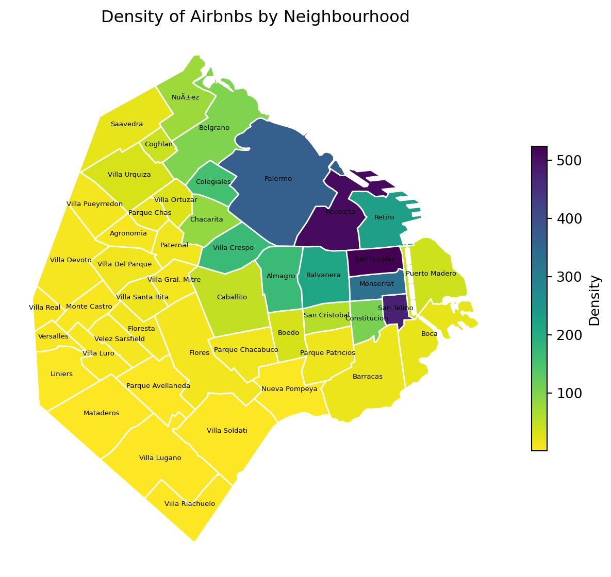
We can see some significant differences. Why is that? Have a chat with the person next to you.
Regular lattices: hex-binning
Sometimes we either do not have any polygon layer to use or the ones we have are not particularly well suited to aggregate points into them. In these cases, a sensible alternative is to create an artificial topology of polygons that we can use to aggregate points. There are several ways to do this but the most common one is to create a grid of hexagons. This provides a regular topology (every polygon is of the same size and shape) that, unlike circles, cleanly exhausts all the space without overlaps and has more edges than squares, which alleviates edge problems.
Important
If you are still not sure on the difference between geographic coordinate systems and projected coordinated systems go back to Lecture 1.
First we need to make sure we are in a projected coordinate system:
BA_proj = BA.to_crs(epsg=22176) # CRS for Argentina, in metres
listings_proj = listings_gdf.to_crs(BA_proj.crs) # making sure both files have the same crsPython has a simplified way to create a hexagon layer and aggregate points into it in one shot, thanks to the hexbin method available on every axis object:
fig, ax = plt.subplots(figsize=(8, 8))
hb = ax.hexbin(
listings_proj.geometry.x,
listings_proj.geometry.y,
gridsize=50,
cmap="viridis_r",
mincnt=1, # don't draw empty hexagons
bins="log", # log scale, as counts are very skewed
)
plt.colorbar(hb, ax=ax, shrink=0.5, label="Airbnb counts")
ax.set_title("Hex-binned Airbnb counts")
ax.set_axis_off()
plt.show()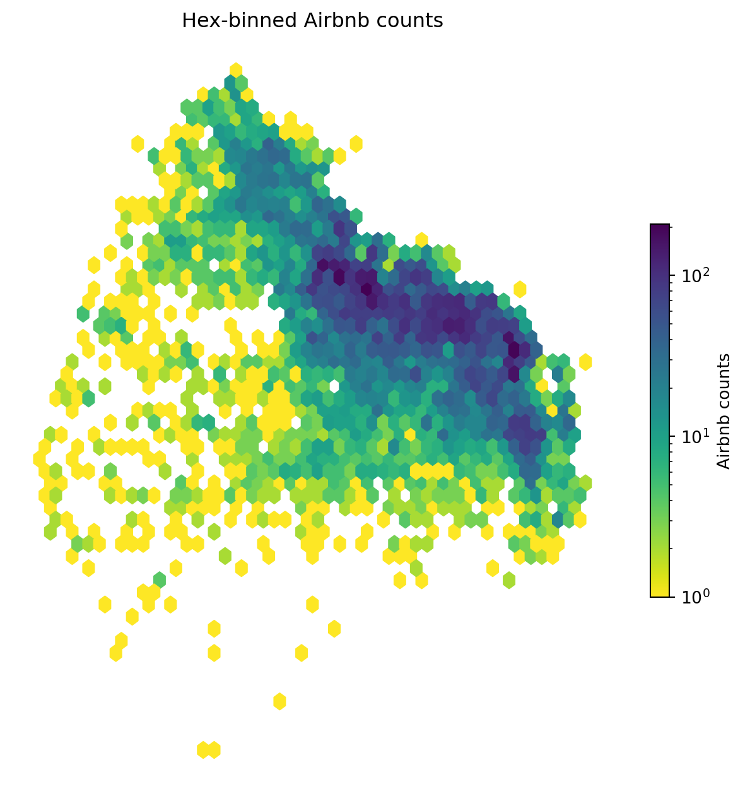
Let’s unpack the code here:
- We call
hexbindirectly on the projected coordinates (listings_proj.geometry.x/.y), so hexagon size is a real distance rather than degrees. gridsize=50sets the number of hexagons per axis (a 50 by 50 layer).mincnt=1hides hexagons containing no points, so the map isn’t a solid block of background colour.bins="log"puts counts on a log scale — the same reason the R version uses a log transform, since a handful of hexagons contain vastly more listings than the rest.- The colorbar shows how counts map to colours. This is optional but almost always worth including.
Kernel Density Estimation
Hex-binning is a quick fix when you don’t have a sensible polygon layer to aggregate into. But it doesn’t escape the modifiable areal unit problem — we’re still drawing arbitrary boundaries and counting inside them, so the result can still mismatch the underlying pattern.
Kernel density estimation (KDE) avoids the problem entirely by never aggregating into areas at all. Instead of asking “how many points fell inside this box?”, KDE asks “how much point-ness is there at this exact spot?” — counting nearby points more heavily than distant ones, and producing a smooth continuous surface rather than a set of bins.
NoteThe one parameter that matters: bandwidth
Bandwidth controls how far each point’s influence spreads.
- Small bandwidth → a spiky surface that tracks individual points. Lots of detail, lots of noise.
- Large bandwidth → a smooth blob. Clean, but real local structure gets washed out.
There is no single “correct” value. Choosing one is a judgement call about what scale of pattern you’re trying to show.
Kernel densities with seaborn
The good news: you don’t need anything exotic for this. seaborn can compute and draw a KDE in a single call with kdeplot(), which is the same approach the R version of this lab uses via geom_density_2d_filled().
It needs plain x/y columns rather than a geometry column, so we pull the coordinates out first. Note we use listings_proj (projected, in metres) rather than the unprojected version — distances need to be meaningful for the smoothing to make sense.
listings_xy = pd.DataFrame({
"X": listings_proj.geometry.x,
"Y": listings_proj.geometry.y,
})
listings_xy.head()| X | Y | |
|---|---|---|
| 0 | 6.370625e+06 | 6.170263e+06 |
| 1 | 6.369329e+06 | 6.172840e+06 |
| 2 | 6.371878e+06 | 6.171108e+06 |
| 3 | 6.368858e+06 | 6.171542e+06 |
| 4 | 6.368858e+06 | 6.171542e+06 |
Tip
KDEs are computationally intensive, and this is a large point pattern. If the cells below are slow on your machine, take a random subset — it retains the overall structure of the pattern with far fewer points:
listings_xy = listings_xy.sample(1000, random_state=12345)The random_state ensures the sample is always the same, so your results stay reproducible.
Now we can map it:
fig, ax = plt.subplots(figsize=(8, 8))
sns.kdeplot(
data=listings_xy, x="X", y="Y",
levels=12, fill=True, cmap="viridis", ax=ax
)
ax.set_title("KDE of Airbnbs in Buenos Aires")
ax.set_axis_off()
plt.show()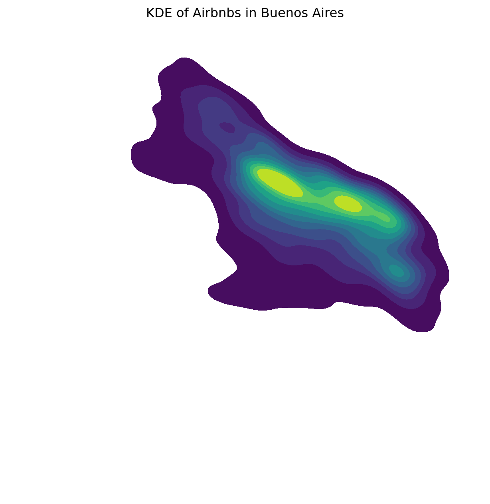
Let’s unpack that:
sns.kdeplot()does the density estimation and the filled-contour drawing in one step.levels=12sets how many contour bands to draw — more bands, finer gradation.fill=Truecolours the space between contour lines, rather than drawing lines only.
We can add the neighbourhood boundaries for context. Because both layers are now in the same projected CRS, they line up directly:
fig, ax = plt.subplots(figsize=(8, 8))
sns.kdeplot(
data=listings_xy, x="X", y="Y",
levels=12, fill=True, cmap="viridis", ax=ax
)
BA_proj.plot(ax=ax, facecolor="none", edgecolor="white", linewidth=0.2)
ax.set_title("KDE of Airbnbs in Buenos Aires")
ax.set_axis_off()
plt.show()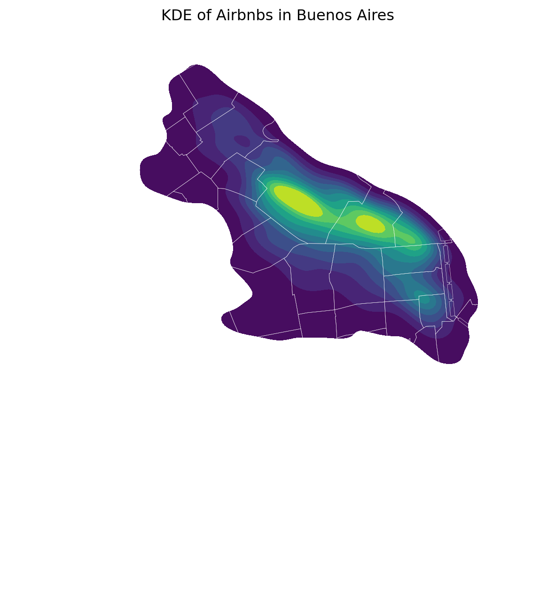
Changing the bandwidth
The bw_adjust argument multiplies the default bandwidth: values below 1 give a spikier surface, above 1 a smoother one. Compare these two against the default above:
# Half the default bandwidth -- more local detail
fig, ax = plt.subplots(figsize=(8, 8))
sns.kdeplot(
data=listings_xy, x="X", y="Y",
levels=12, fill=True, cmap="viridis", bw_adjust=0.5, ax=ax
)
ax.set_title("Bandwidth: bw_adjust = 0.5")
ax.set_axis_off()
plt.show()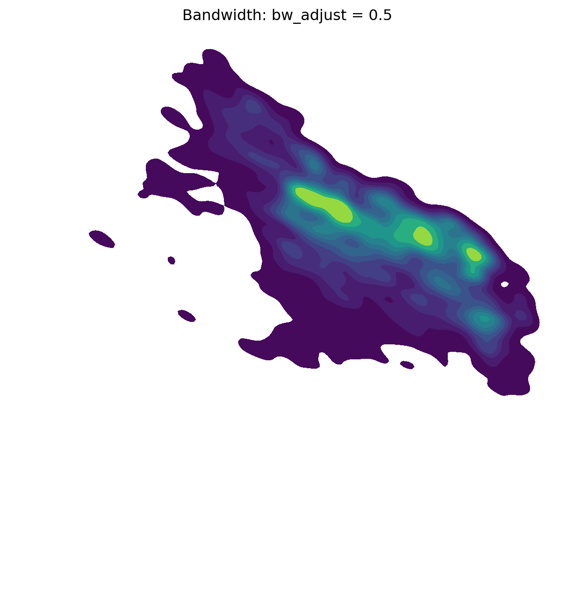
# Double the default bandwidth -- much smoother
fig, ax = plt.subplots(figsize=(8, 8))
sns.kdeplot(
data=listings_xy, x="X", y="Y",
levels=12, fill=True, cmap="viridis", bw_adjust=2, ax=ax
)
ax.set_title("Bandwidth: bw_adjust = 2")
ax.set_axis_off()
plt.show()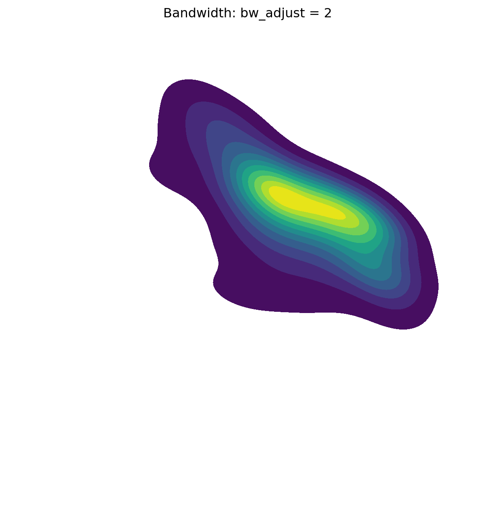
WarningThese are working maps, not finished ones
Everything we’ve mapped so far is deliberately rough — the point has been to see what the method does, not to produce something publication-ready. Look closely and you’ll spot plenty that still needs fixing:
- No colourbar on most of them, so there’s no way to read what the shading actually means
- No scale bar, no north arrow, no source credit
- Nothing tells the reader what is dense, or in what units
- No basemap or boundaries for geographic context on most of them
- Titles are debugging notes to ourselves (
"Bandwidth: bw_adjust = 2"), not something you’d caption in a report
Before any of these went into a piece of written work, you’d want to clean all of that up — much like we did in the choropleths lab, where we built up a final map with a proper title, palette, north arrow, scale bar and source.
TipHave a think
Which of the three bandwidths would you actually put in a report, and why? There’s no right answer — it depends on whether you’re trying to show where the main concentrations are or how fine-grained the clustering gets.
NoteGoing further: other KDE tools
sns.kdeplot() is quick and needs nothing extra, but it has limits. It doesn’t know that Buenos Aires has a boundary, so it will happily smear density out over the river; and bw_adjust is a hand-tuned multiplier rather than a statistically-chosen bandwidth.
If you need more control, scipy.stats.gaussian_kde gives you the underlying estimator directly, so you can evaluate the density on your own grid and clip it to a boundary. scikit-learn’s KernelDensity goes further still, offering several kernel choices and — importantly — proper bandwidth selection by cross-validation via GridSearchCV.
This is a good moment to practise reading documentation. We’re not going to walk through either library line by line. If you want to use them, go and look at their docs, work out what the functions expect, and try it — that skill will serve you far better over the rest of this course than us handing you the code.
Cluster of points (DBSCAN)
Partitioning methods (K-means, PAM clustering) and hierarchical clustering are suitable for finding spherical-shaped clusters or convex clusters. In other words, they work well for compact and well separated clusters. Moreover, they are also severely affected by the presence of noise and outliers in the data.
Unfortunately, real life data can contain: i) clusters of arbitrary shape ii) many outliers and noise.
In this section, we will learn a method to identify clusters of points, based on their density across space. To do this, we will use the widely used DBSCAN algorithm. For this method, a cluster is a concentration of at least m points, each of them within a distance of r of at least another point in the cluster. Points in the dataset are then divided into three categories:
- Noise, for those points outside a cluster.
- Cores, for those points inside a cluster whith at least
mpoints in the cluster within distancer. - Borders for points inside a cluster with less than
mother points in the cluster within distancer.
Both m and r need to be prespecified by the user before running DBSCAN. This is a critical point, as their value can influence significantly the final result. Before exploring this in greater depth, let us get a first run at computing DBSCAN, using scikit-learn, which implements the algorithm. For more on this, check here.
Data preparation for DBSCAN
DBSCAN’s eps parameter is a real-world distance, so we need our points expressed in a projected CRS with metres as units — not raw longitude/latitude, and not a standardised/scaled version of them, since neither has a meaningful “distance” interpretation. We already have exactly that: listings_proj, created earlier for the hex-binning section, in EPSG:22176 (metres). We just need the X/Y coordinates as a plain array:
coords = np.column_stack([listings_proj.geometry.x, listings_proj.geometry.y])
coords[:5]array([[6370625.44370767, 6170263.18939988],
[6369329.30544564, 6172840.17265141],
[6371877.90438539, 6171108.09395972],
[6368857.59590294, 6171542.06254319],
[6368857.59590294, 6171542.06254319]])Computing DBSCAN using scikit-learn
First, we set the ‘random seed’, which means that the results will always be the same when running the following commands, since the random aspects of the algorithms are controlled.
np.random.seed(123456789)Run the DBSCAN algorithm, specifying:
eps: ‘epsilon’, radius (in metres, sincecoordsis projected) of the ‘epsilon neighborhood’ (the maximum point-to-point distance for considering two points to be in the same cluster)min_samples: the minimum number of neighbouring points required for a point to be considered part of a cluster.
We decide to consider a cluster of airbnb with more than 50 airbnbs within 100 metres from them, hence we set the two parameters accordingly — matching the R lab’s first run exactly:
db = DBSCAN(eps=100, min_samples=50).fit(coords)
# labels: -1 means noise, 0/1/2... are cluster ids
lbls = pd.Series(db.labels_, index=listings_proj.index)
lbls.value_counts().head()-1 15239
0 767
2 607
3 463
5 344
Name: count, dtype: int64The labels_ object always has the same length as the number of points used to run DBSCAN. Each value represents the index of the cluster a point belongs to. If the point is classified as noise, it receives a -1.
Let’s plot the data, colouring points according to which cluster DBSCAN grouped each point in. Noise points are drawn in grey:
def plot_clusters(coords, labels, title):
fig, ax = plt.subplots(figsize=(7, 7))
noise = labels == -1
# noise in grey
ax.scatter(coords[noise, 0], coords[noise, 1], c="grey", s=2, linewidth=0)
# clustered points coloured by cluster id
ax.scatter(
coords[~noise, 0], coords[~noise, 1],
c=labels[~noise], cmap="tab20", s=4, linewidth=0
)
ax.set_title(title)
ax.set_axis_off()
ax.set_aspect("equal")
plt.show()
plot_clusters(coords, db.labels_, "DBSCAN: eps = 100m, min_samples = 50")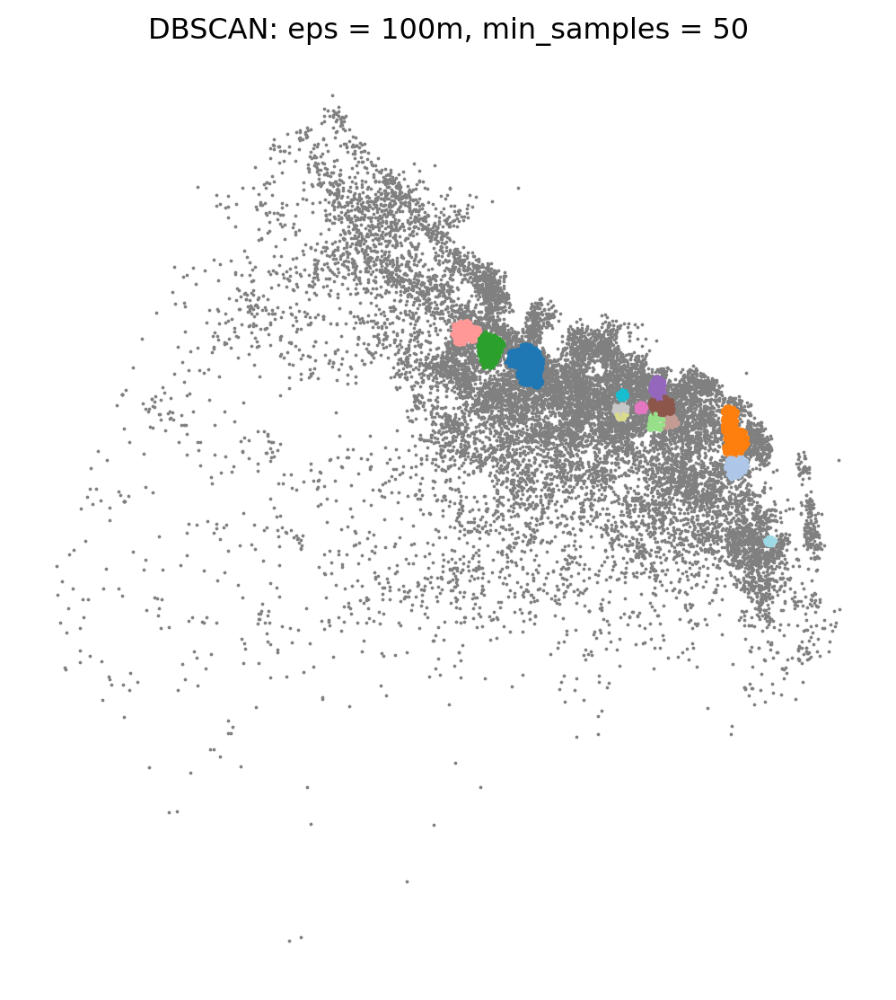
The algorithm is able to identify a few clusters with a high density of airbnbs. However, this is all contingent on the parameters we arbitrarily set. Depending on the maximum radius (eps) we set, we will pick one type of cluster or another: a higher (lower) radius will translate into less (more) local clusters. Equally, the minimum number of points required for a cluster (min_samples) will affect the implicit size of the cluster.
For an illustration of this, let’s run through a case with very different parameter values: a larger radius (250m) and a smaller minimum number of points (10) — matching the R lab’s second run:
db2 = DBSCAN(eps=250, min_samples=10).fit(coords)
plot_clusters(coords, db2.labels_, "DBSCAN: eps = 250m, min_samples = 10")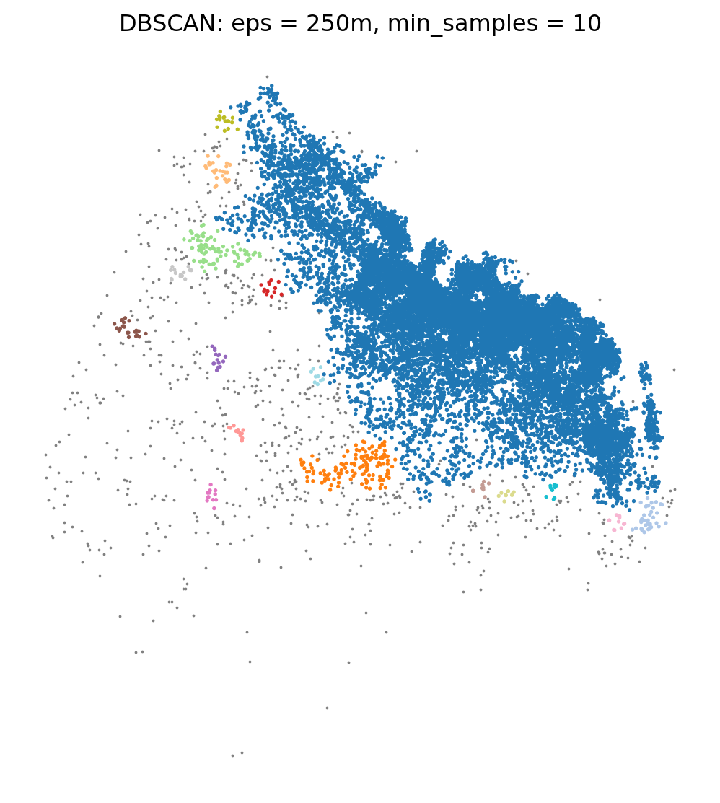
The output is now very different, isn’t it? This exemplifies how different parameters can give rise to substantially different outcomes, even if the same data and algorithm are applied.
The DBSCAN algorithm is very sensitive to changes to the eps and min_samples values. Smaller eps leads to definition of sparser clusters as noise while larger eps sizes may make denser clusters to be merged.
Determining the optimal eps value
Rather than picking eps arbitrarily, think of every point and its distance from its nearest neighbours. We can use a k-nearest-neighbour distance matrix to compute this, with a specified value of k corresponding to min_samples.
We then plot these distances in ascending order, with the aim of finding the “knee” — the point where a sharp change occurs along the curve. Points below the knee are close enough together to plausibly be part of a cluster; points above it start looking more like noise. That knee is a reasonable candidate value for eps.
We use NearestNeighbors from scikit-learn — here with k = 50, matching the min_samples from our first run:
k = 50
neighbors = NearestNeighbors(n_neighbors=k).fit(coords)
distances, _ = neighbors.kneighbors(coords)
# distance to the kth nearest neighbour, sorted ascending
k_distances = np.sort(distances[:, -1])
fig, ax = plt.subplots(figsize=(7, 5))
ax.plot(k_distances)
ax.set_xlabel("Points, sorted by distance")
ax.set_ylabel(f"Distance to {k}th nearest neighbour (metres)")
ax.set_title("Finding the optimal eps")
plt.show()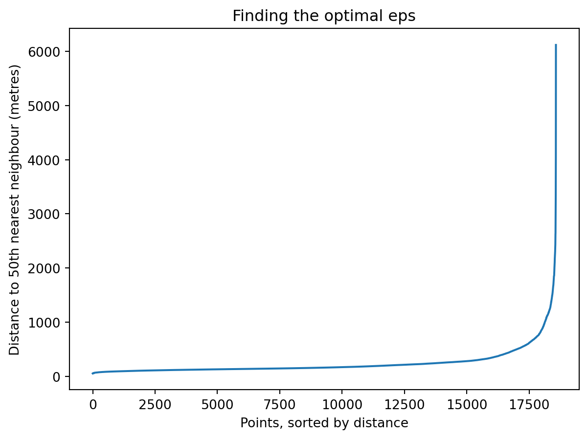
Look for where the curve visibly bends upward — that distance (in metres, since coords is projected) is a defensible choice of eps for this min_samples.
A more robust alternative: A-DBSCAN
The R version of this lab uses HDBSCAN at this point. In Python we have A-DBSCAN (from the esda package), which shares the same core motivation — handling clusters of varying density more robustly than vanilla DBSCAN — though the two algorithms work differently under the hood.
A-DBSCAN runs DBSCAN many times on random subsets of the data and lets the runs “vote” on which cluster each point belongs to, which makes the result far less sensitive to any single arbitrary parameter choice.
Unlike scikit-learn’s DBSCAN, ADBSCAN reads coordinates from columns literally named X and Y rather than from the geometry — so we need to create them first:
listings_proj["X"] = listings_proj.geometry.x
listings_proj["Y"] = listings_proj.geometry.yadbs = ADBSCAN(150, 20, pct_exact=0.5, reps=10, keep_solus=True)
np.random.seed(1234)
adbs.fit(listings_proj)ADBSCAN(eps=150, keep_solus=True, min_samples=20, pct_exact=0.5, reps=10)In a Jupyter environment, please rerun this cell to show the HTML representation or trust the notebook.
On GitHub, the HTML representation is unable to render, please try loading this page with nbviewer.org.
ADBSCAN(eps=150, keep_solus=True, min_samples=20, pct_exact=0.5, reps=10)
fig, ax = plt.subplots(figsize=(8, 8))
listings_proj.assign(lbls=adbs.votes["lbls"]).plot(
column="lbls", categorical=True, markersize=2.5, ax=ax
)
ax.set_title("A-DBSCAN")
ax.set_axis_off()
plt.show()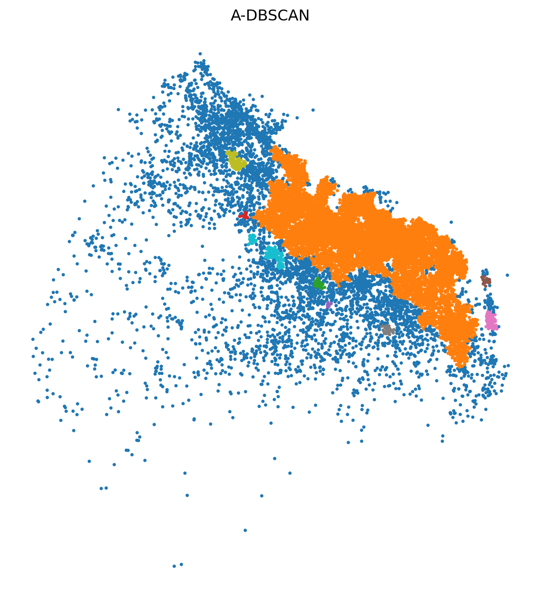
One useful thing A-DBSCAN gives us that plain DBSCAN doesn’t: it can return the boundary of each cluster as a polygon, which is far easier to overlay on a map than a scatter of coloured dots.
polys = get_cluster_boundary(adbs.votes["lbls"], listings_proj, crs=listings_proj.crs)
fig, ax = plt.subplots(figsize=(8, 8))
BA_proj.plot(ax=ax, facecolor="none", edgecolor="grey", linewidth=0.3)
polys.plot(ax=ax, alpha=0.5, color="red")
ax.set_title("A-DBSCAN cluster boundaries")
ax.set_axis_off()
plt.show()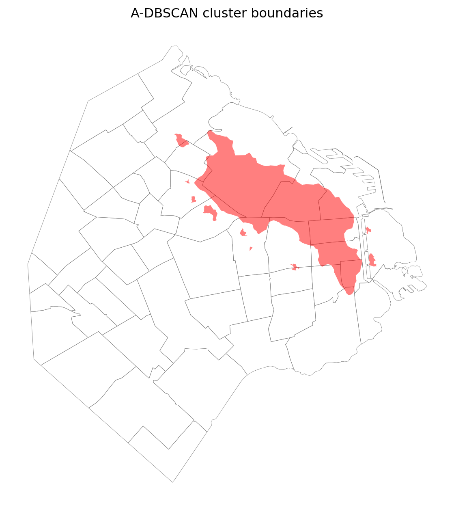
Resources
seaborn.kdeplotdocumentation — the function used for kernel density estimation in this labscikit-learndensity estimation — for going beyondseabornscikit-learnclustering documentation, includingDBSCANandHDBSCAN